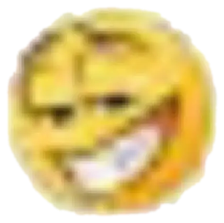

GAN
GAN

ينونوووو ازيكك

ايه الاخبار يسويتي اتمنى تكوني لقيتي الزرار دا وتكون جاتلك الهيدين ماسدج ف ف الماسدج دي هقول حاجات جديدة وكدهو عشان يكون ليها قيمة وتستحق انها تكون مخفية ف اول حاجة يروحي اتمنى تكون حياتك ماشية كويس ومذاكرتك وصلاتك وكدهو وكل الحاجات دي وتكوني عارفة تتحكمي فمشاعرك بما اننا ف هذا الوقت من الشهر
صح انا لسة حالم بيكي بس كان حلم ممتع عادي مفيش فيه معنى عميق كان انتشر مرض زمبي فالمدرسة ف الحلم كان اني بحميكي من زومبي التجمع والحمدلله فضيت غلي من الاء فالحلم كانت زومبي وانا قتلتها وقولت جملة فخمة وانا بقتلها قولت عشان تفكري تحضني نونِتي تاني 😎
ف كنت عايز اقول اني بجد مبسوط من الي وصلناله ك مشاعر او فهم لبعض وبجد من ودهة نظري الخبيرة انا شايف اننا بيرفكت ك ازواج وبجد انا مبسوط اني ف الاول خالص صدقت احساسي وبدأت كلام معاكي وبرضه اني كملت مع اني طاقتي كانت فالحضيض ف بجد انتي اكتر بنت مميزة فالدنيا و ورث ات وشخصيتك بجد جميلة اوي بجد مجرد قعدتي معاكي بحس ان كل حاجة تمام وانا مبسوط كلامنا العادي حتى الكلام عن يومنا بتبسط من كل دا بجد الحاجات العادية معاكي ليها قيمة اوي بالنسبالي ودي حاجة مكنتش بحسها علطوول زمان كنت بحس ان لازم الكلام ياخد طريق معين عشان احس اني مستمتع او مبسوط بس بجد معاكي لا بجد انا بحبك اوي ينونو انتي بجد عسولة اوي وقلبك بجد طيب وصادق انتي بجد مهمة او ي ينور عيني بجد انتي اهم واحلى حاجة فحياتي
و كنت عايز اقول اني صحيت شامم ريحتك بقيت ساعات كتير بشم ريحتك وانا صاحي عادي وبسرح فيكي ف انا مبسوط اوي اني فتحت الابيليتي دي معاكي بجد ريحتك جميلة اوي وكل ما بفكر فيكي بطلع مبسوط وسايح عليكي ف مبسوط اوي من الموضوع دا وبرضه لما بفتح اللاب وبلاقي اسم سماعتك لسة عندي بفتكرك برضه فيه حاجات كتير اوي بتفكرني بيكي وبتحسسني بيكي ف انا عن نفسي مبسوط اوي من دا وكنت عايز اقول اني اسف لو محاولتي اني احضنك خلتك تتضايقي مني او كدا بجد انا بس الي تفكيري كان عبيط ف اتمنلى متكونيش متضايقة مني او حاجة
ولحد دلوقتي بجد مجاتليش لحظة حسيت فيها ان مكنش ينفع اوعدك اننا نتجوز مثلا او اتضايقت انك انتي الي خدتي الفيرجنتي بتاعتتي او انك هتكتيني يمتوحشة انتي عشان بجد بحس اني عاوز اجتهد واتعب عشان اتجوزك واخليكي بتاعتي ف بجد مش شاكك ف نيتي ف اي حاجة عملتها معاكي ودا بيأكدلي بجد انك إن شاء الله تكوني بتاعتي واكون بتاعك وتكوني اول واخر واحدة تمسك ايدي وبمناسبة انك متوحشة وهتكتي عرضي ف اتوقع من توحشك دا ف طريقتك المتوحشة ف حلمي كانت حقيقة وانك كدا بجد ف دي حاجة بوم بوم يعني وحاجة تثبت انني برئ من ان الحلم يكون بسببي
هديكي برضه شوية وصايا مقدسة وحاجات عايزك تعمليها عشان اكون مطمن عليكي واحنا مبنتكلمش
اول حاجة بجد خدي بالك من البننت الكوفتس الي شافتنا دي وزي ما قولتلك لو لقيتيها بتغمز صحابها لما انتي تيجي او كدا او اي حاجة من القبيل دا اكرفي او قوليلها مكتوب عليا نكتة يعني اي حاجة جر شكل عشان متحسش انك خايفة ويخليها تفتح معاكي الموضوع ف انتي تقولي انك كنتي كاتة مع الاء وكدا وطلعتوا ف لو هي جابت سيرتي اتخضي وهي كدا هتفكر اني متحرش المدرسة ودا افصل سيناريو ممكن يخلي مفيش كلام يطلع عليكي او حتى بينهم يجيبوا سيرتك يروحي وانا فكرت اني ابعت فولو لبنات عشان متكونيش وحدك عني ودا يزود الشك عند البنات الكوفتس بس مكنتش عاوز ادخل حد تاني اكونتي وخوفت منك الصراحة يعني انتي عنيفة بس بجد الموضوع بياكل دماغي مش عايز حد يقول عليكي كلمة وحشة حتلى لو بينه وبين نفسه
تاني حاجة لبسك متدخليهوش جوا ام البنطلون عشان وسطك وباقي جسمك بيبان جامد وبراحتك انا قولتلك من الاسبوع الجي وهبص علي جسمك وهركز ف لو انتي شطورة ومش عايزاني اشوف طلعي التشيرت من البنطلون عشان تخبي نفسك وانا مشوفش اي حاجة يسويتي
برضه شعرك لما يجي نص اليوم والبندانة تتزحلق او اي سبب من الاسباب دي ف معلش خشي الحمام خمس دقايق ظبطي شعرك ودخليه فالطرحة وكدا هتبقي توب وان بنات شطورة فالعالم اكتر ما انتي توب واان بنات حلوة فالعالم
وبس ركزي فمذاكرتك وصلاتك وكدهو يعني ومتخليش الاوفر ثينكينج يضيع وقتك سواء كان عليا او كان علي حاجة غيري ولو كان عليا ف بجد متقلقيش من اي حاجة من نوايايا بجد انا والله كل حاجة عملتها معاكي كانت بسبب مشاعري ناحيتك وحبي تجاهك واي حاجة وحشة والله كانت مش مقصودة او بسبب سوء فهم او اني غبي بسبب اني كنت قربت انام ووفري طاقتك للمذاكرة او قعدتك مع صحابتك وبس وفالمستقبل اجلديني بقا ودوري ورايا وحققي معايا واعملي الي تعوزيه بس دلوقتي متضيعيش وقتك
وكنت عاايزك تقولي دعاء قبل النوم علطول عشان متجيلكيش كوابيس وعشان برضه بيغفر الذنوب باين ف استني هقوله تاني وتخيلي انه زي ما مليتهولك ف الكول قبل كدا "اللهم وجهت وجهي اليك واسندت ظهري اليك وفوضت امري إليك لا منجا ولا ملجأ منك إلا اليك اللهم امنت بكتابك الذي انزلت وبرسولك الذي ارسلت" وهقولك تاني يا جنَّة كل اما تحطي راسك علي المخدة افتكري اني بحبك من كل قلبي وان قلبي مدقش لحد غيرك يسويتي
ويحبيبتي يشطورة معلش استحملي ضغط اهلك او مشاكلهم او التوتر الي فالبيت والحاجات دي كلها لحد ما اتجوزك ونعيش مرتاحين وبجد متقلقيش هننعيش حياة هادية منغير حاجة تضايقنا وهاخد بالي منك علطول ومش هشيلك اي هم بس للاسف اهلك محتاجين وقفنك معاهم يروحي دلوقتي وانك تخففي عليهم شوية هو المفروض العكس عشان انتي الي عندك هموم اكتر فعلا ولازم هما الي يخففوا عنك بس معلش يروحي هما شايفينك اكنتر واحدة شطورة ومسؤولة فالبيت ف بيحملوا عليكي شوية زيادة ف معلش يروحي استحملي ومتخليش الضغط والتوتر الي فالبيت ياثر علي صحتك النفسية يعني بجد لما البيت يكون متوتر هدي نفسك انتي واعملي حاجة بتحبيها اتفرجي على مسلسل وكلي حلويات بتحبيها كل دا هيقلل التوتر يحبيبتي انا بجد عايزك علطول مبسوطة ومش متضايقة وحتلى ولو الطاقة السلبية وصلتلك بطريقة ما اوعي تعيطي لةحدك فالمدرسة ممكن تشتكس ل الاء وكدا وعيطي جنبها عشان تفرغي حزنك حبة وبعدين اعملوا حاجة بتحبوها ووعد هتبقي مبسوطة ومفيش حاجة مضايقاكي بس اوعي تعيطي وانتي لوحدك عشان خاطري انا ممكن انتحر لو احللى عيون فالدنيا الي بيلمعوا دول اتبلوا من الدموع فترة طويلة لوحدهم فبالله يا جنَّة خدي بالك من نفسك كويس يسويتي لحد ما انا يبقا ليا المساحة اخد بالي منك
وبس كدا اتمنالك كل الخير والسعادة فحياتك ينونو ومتبقيش متضايقة من اي حاجة ابداً وتفضل الضحكة مرسومة علي احللى وش واحللى عيون للأبد
وصح الاغنية الي كنت بغنيهالك اسمها never let me go لمحمد عبد الوهاب وسمير الاسكندراني
زياد كنت بكلمه امبارح قالي انه صحي الفجر يوم الاربع لقاني نايم علي الارض والله معرفش نمت ازاي والله كان نفسي انيمك
اسمه ايه دا النهاردة الجمعة وانتي وحشتيني اوي ف كنت عايز اكلمك اقولك الي بيحصل ف حياتي وحشني اوي الكلام معاكي ي روحي واني اسمعك واعرف منك الي حصل وبيحصل فيومك ف هقولك انا تفاصيل يومي هو اول حاجة نزلت احلق الحلاق زحمة موت محمود وعلي كلموني اروح درس العربي اسلم علي المستر بس كرفت عشان رهف وكام واحدة من دفعتي هناك ف اتمنى يفضى علي الفجر عشان عايز احلق ويارب الحلاقة تعجبك اصلا وبرضه انا عملت ريستوك لفيتاميناتي جبت زنك وماغنسيوم وفيتامين د ثري ب 250 وكنت بستوك الريلز الي عامله عليها لاف ف مين بقا الي انتي تخطيتيه ف يوم بقا بقا وبستوك اليسينينج اكتيفيتي بتاعتك وعرفت انك شوفتيني وانا بسمع جود باي ماي دانيش سويت هارت وسمعتيها بعدي ف شوفي انا متطور ازاي بقا وهكر وبرضه لما روحت البيت يوم الاربع وشوفتك منزلة ل ذا ويكند زي ما اتفقنا اتطمنت وكنت هعمل لاف بالغلط ونسيت انه هيتبعتلك ف مرضتش عشان انا مش حكاك وكدهو انا متحرش المدرسة بس وبرضه كنت بقلب ف الصور الي ف شات الانستا وافتكرت اني نسيت اخليكي تبعتيلي الصور بتاعة خروجتك انتي وتوتا بتاعة البولينج ف اتقهرت اوي ف ممكن تبعتيهالي يوم السبت وتمسحي الشات وكدهو وانا هبقا مؤدب وصح اشتراك الجيم بتاعي هيخلص الاسبوع الجي زي ما توقعت ف مش هقيم الاسبوع دا واتمنى انتي برضه متقيميش عشان نكون بنقيم سوا كل اسبوع واحس بالراحة انك لسة قريبة مني وفالمبنى التاني وصح يوسف قالي ان حبيبة عاوزة تعرفني حاجة ضروري ف قالي انها هتكتب ماسدج باين وصاحبته هتوصلهالي منها ف مش عارف ايه الي هيحصل بس انا حلمت ب دا النهاردة حلمت انها قاعدة معايا وبتعيطلي ف مش عارف ايه الي ممكن تكون كاتباه بس اتوقع عشان عيد ميلادها لسة معدي وانا مجربتش اصالحها زي ما هي عملت ف قلبي مقبوض مش عارف ليه او مخنوق مش عارف
ساعات كتير بحس بزعل اني مش اول واحد تكوني معاه بحس ان كان لازم اكون انا معاكي عشان اقدرك واعاملك صح ومزعلكيش ابداََ ومسيبلكيش ذكريات تضايقك او تخليكي متقدريش تطلعي مشاعرك زي ما تعوزي منغير قلق واوفر ثينكينج بس بجد انا عاوز اشيل مسؤولية كل دا دلوقتي وابقا انا الشخص الي يطلعك من كل دا ويعيشك الاحاسيس الحلوة ويرجع لمعة الحُّب فيكي تاني بس بتقهر اوي لما تيجي عليا لحظات ضعف او تفكير فالماضي او حنين بحس ان لا انا اخترت من الاول اني ابقا معاكي عشان انا عاوز كدا وعايز ابذل مجهودي واثبت اني بحبك بشكل صح منغير نوايا وحشة واني بجد مش عايز علاقتنا تبقا هبل فالثانوي واني عاوزها حب بجد يكمل لحد ما نكبر وننضج سوا ونتجوز بعض ف اوعدك برضه اني مش هستسلم ف لحظات الضعف دي وهفضل افكر فيكي طول الوقت وهفضل مخلص ليكي كدا كدا لما بتخنق بعرف اخرج نفسي بس باخد وقت ف متقلقيش عليا ينونو اتمنى انا بس اكون فعلا سايب نونو شطور يقدر ياخد باله من نفسه وميسيبس الحزن والهموم ترخم عليه ف بجد خدي بالك من نفسك كويس اوي اوي ينونو
بجد يا جنَّة كنت عاوز اقولك انك بجد حلوة اوي شكل وشخصية كل اما افكر فيكي فالأخر مبيجيش علي بالي غير قد ايه انا محظوظ بيكي وانك البنت الي انا عاوزها بالظبط يعني ما شاء الله شكلك حلو اوي بجد خلابة وبتسحري عيني وكل دا منغير شعرك ف بجد انا هفضل طول عممري امدح في شكلك واعرفك قد ايه انتي جميلة وتتاكلي مهما حصل ومهما كبرتي هتفضلي احلى واحده ف عيني وكشخصية بجد شخصيتك جميلة وطيبة بحسك بجد نقية غيري وغير حبيبة بجد انتي واحدة نقية وبتعرفي تفكري وبالنسبالي انتي بجد مسؤولة وبتعرفي تتصرفي بس برضه فالاخر مش هتستخدمي الصفات دي معايا وهتفضلي النونو العسول الي بيتدلع ومبيشيليش هموم خالص خالص وهفضل اخد بالي منك طول الوقت يحياتي وبجد انا بحبك اوي اوي
وعلفكرة انتي مسلمتيش عليا وانا مروح وقعدت اعيط واحزن طول اليوم ها
وبس يروحي دا اخر فنجان من كلامي ليكي ف خلي بالك من نفسك كويس اوي اوي يسويتي وكلي كويس وخدي فيتاميناتك اوعي تنسيها ومع اطيب التمنيات بدوام الصحة والسلامة لحد ما تبقي بتاعتي يسويتي
و بس كدا بعشقكك ينونِّتي